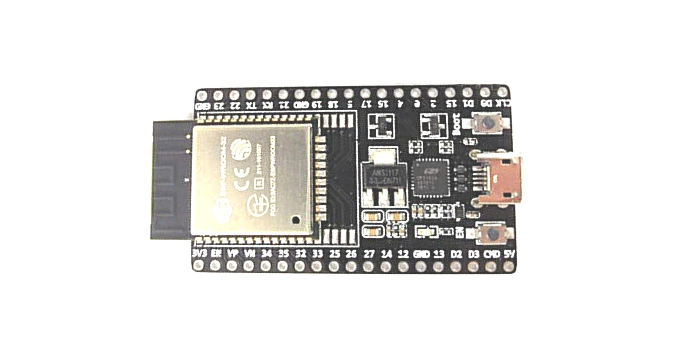

ESP32 Documentation
” Hello! Here are some of the stuff we did using our ESP32 as documentation”

In order to better understand the ESP32, we looked through some websites to know the pin configurations and functions that the module can do. Personally, it works similarly as any micro-controllers like the Arduino Uno, Raspberry Pi and such.
Below, I have given the pin configurations of the ESP32.

Pin Configuration
| Pin Category | Pin Name | Details |
|---|---|---|
| Power | Micro-USB, 3.3V, 5V, GND | Micro-USB: ESP32 can be powered through USB port5V: Regulated 5V can be supplied to this pin which is we be again regulated to 3.3V by on board regulator, to power the board.3.3V: Regulated 3.3V can be supplied to this pin to power the board.GND: Ground pins. |
| Enable | En | The pin and the button resets the microcontroller. |
| Analog Pins | ADC1_0 to ADC1_5 and ADC2_0 to ADC2_9 | Used to measure analog voltage in the range of 0-3.3V.12-bit 18 Channel ADC |
| DAC pins | DAC1 and DAC2 | Used for Digital to analog Conversion |
| Input/Output Pins | GPIO0 to GPIO39 | Totally 39 GPIO pins, can be used as input or output pins. 0V (low) and 3.3V (high). But pins 34 to 39 can be used as input only |
| Capacitive Touch pins | T0 to T9 | These 10 pins can be used a touch pins normally used for capacitive pads |
| RTC GPIO pins | RTCIO0 to RTCIO17 | These 18 GPIO pins can be used to wake up the ESP32 from deep sleep mode. |
| Serial | Rx, Tx | Used to receive and transmit TTL serial data. |
| External Interrupts | All GPIO | Any GPIO can be use to trigger an interrupt. |
| PWM | All GPIO | 16 independent channel is available for PWM any GPIO can be made to work as PWM though software |
| VSPI | GPIO23 (MOSI), GPIO19(MISO), GPIO18(CLK) and GPIO5 (CS) | Used for SPI-1 communication. |
| HSPI | GPIO13 (MOSI), GPIO12(MISO), GPIO14(CLK) and GPIO15 (CS) | Used for SPI-2 communication. |
| IIC | GPIO21(SDA), GPIO22(SCL) | Used for I2C communication. |
| AREF | AREF | To provide reference voltage for input voltage. |
ESP32 Technical Specifications
| Microprocessor | Tensilica Xtensa LX6 |
|---|---|
| Maximum Operating Frequency | 240MHz |
| Operating Voltage | 3.3V |
| Analog Input Pins | 12-bit, 18 Channel |
| DAC Pins | 8-bit, 2 Channel |
| Digital I/O Pins | 39 (of which 34 is normal GPIO pin) |
| DC Current on I/O Pins | 40 mA |
| DC Current on 3.3V Pin | 50 mA |
| SRAM | 520 KB |
| Communication | SPI(4), I2C(2), I2S(2), CAN, UART(3) |
| Wi-Fi | 802.11 b/g/n |
| Bluetooth | V4.2 – Supports BLE and Classic Bluetooth |
Credits to https://components101.com/microcontrollers/esp32-devkitc for providing this pin configuration layout and functions of the different pins and to https://lastminuteengineers.com/esp32-arduino-ide-tutorial/#onboard-switches-led-indicators for giving the necessary instructions and basics regarding the ESP32 module.
Written on November 24, 2019